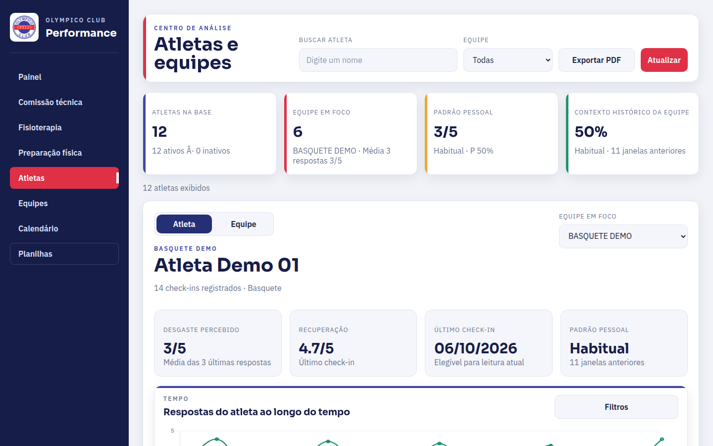
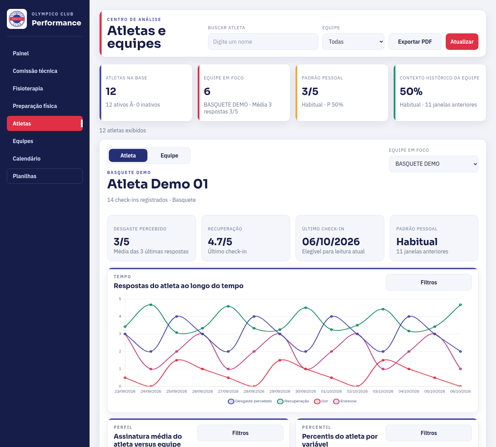

Dashboard de Controle de Carga
Reúne check-ins de carga, dor, fadiga, sono e estresse que antes precisavam ser consultados em planilhas separadas.

Sobre o projeto
O Dashboard de Controle de Carga surgiu de um problema muito prático. As informações dos atletas já existiam, mas estavam em planilhas grandes e difíceis de acompanhar na rotina. Minha tentativa foi criar uma forma mais direta de enxergar os check-ins e perceber quando alguma informação merecia atenção.
O dashboard reúne indicadores como carga, dor, fadiga, sono e estresse. Ele não foi pensado para decidir nada sozinho ou substituir a conversa entre os profissionais. A ideia é organizar melhor o que já foi registrado para que comissão técnica, preparação física, fisioterapia e psicologia consigam conversar com mais clareza.
Esse projeto também me ajudou a entender que criar uma ferramenta não é apenas montar gráficos. É preciso pensar em nomes, fontes, dados ausentes, atualização e no modo como alguém realmente vai usar aquilo durante o trabalho.
Notas de desenvolvimento
- Transformar uma planilha grande em uma leitura mais direta.
- Pensar indicadores sem perder o contexto de cada atleta.
- Construir uma ferramenta a partir da rotina de quem vai utilizá-la.
Ferramentas
- HTML
- CSS
- JavaScript
- Node.js
- Google Sheets
- Visualização de dados
Por dentro do projeto
